DragonBones快速入门指南
黄竣

DragonBones快速入门指南采用知识共享协议3.0版本。
目录
DragonBones是什么？
DragonBones是一套开源的 2D骨骼动画框架和工具，它包含了基于Flash Pro的骨骼动画编辑面板Skeleton Animation Design Panel及骨骼动画ActionScript框架。
它可以让开发者运用熟悉的Flash Pro元件及时间轴编辑方式，快速创建2D骨骼动画，并运用到Flash或其他技术的应用中。Features
动画基于Flash pro时间轴，可以使用Flash传统动画方式制作游戏动画；
骨骼绑定可以让动画更精准，更真实自然，并可通过程序动态控制；
可设置单个骨骼的动画时间缩放和延时播放，使用较少的关键帧就可以表现复杂生动的动画效果；
动画各部分采用拼接方式，动画有缓动补间，占用位图／内存资源少；
骨骼显示对象与骨骼的逻辑分离，可在不影响动画播放的情况下动态更换；
能方便用于传统DisplayList、Starling及其他技术的2D应用。
下载与安装设置
开源项目地址：http://dragonbones.github.com
从这儿获取Adobe Flash Pro 5.5或以上版本
在SkeletonDesignPanel链接中下载支持Flash Pro的骨骼面板扩展插件SkeletonDesignPanel.zxp，双击此文件并安装。（注：此插件目前仅支持Flash Pro5.5及以上版本）
在SkeletonAnimationFramework链接中下载骨骼动画ActionScript框架，在后续的教程中，我们将使用这套框架来动态显示由Flash Pro设计的骨骼动画。
教程源码下载
接下来，我们将通过几个简单的教程快速了解DragonBones的用法。
请从这里下载本教程相关源码。
教程1：针对设计师 使用DragonBones在Flash Pro中创建骨骼动画

作为设计师，你只需要准备好动画角色的各个部分，在Flash Pro的时间轴中把他们有序组装起来、设置好动作关键帧并运用DragonBones的骨骼动画编辑面板搞定一切。
在下载并安装完毕骨骼面板的Flash Pro扩展插件后，启动Flash Pro。打开教程源码下载包中的DragonBones_tutorial_Start.fla文件。
-
打开库面板，你可以看到此示例的相关资源。

在parts目录中包含的是组成动画Dragon的各个元件，从命名可以直观的了解到它们对应的龙的各个部分。良好的元件命名是个好习惯，不是么？:)
-
双击库面板中的MovieClip元件Dragon进入时间轴编辑模式。我们需要详细了解这个动画的组成，它有助于后面骨骼动画编辑。
请留意时间轴上的各层的命名，我们是以骨骼各个部分来命名的。骨骼动画面板将自动根据层的命名来识别组成骨骼的各个部分。
另外需要注意的是层label，我们添加了标签“walk”用来说明当前时间轴表示的动作。如果由多个动作，请在对应动作起始位置添加标签来说明。这一步非常重要！骨骼动画面板将按照标签来读取并设定动作。

你发现时间轴上并没有添加补间？是的，你仅仅需要在时间轴上设置关键帧上各元件的位置，剩下的工作都可以在骨骼面板中完成。
当然，作为设计师的你，可以按你的习惯做好完整的补间动画，骨骼面板同样可以按照你的动画原样导入。（注：目前版本的DragonBones仅支持传统补间，新补间将在后续版本中支持）
-
当你按上述要求准备好动画，就可以点击Flash Pro菜单中的Window>Other Panels>SkeletonAnimationDesignPanel打开骨骼动画编辑面板，我们将在接下来的操作中详细说明骨骼动画编辑面板的使用。
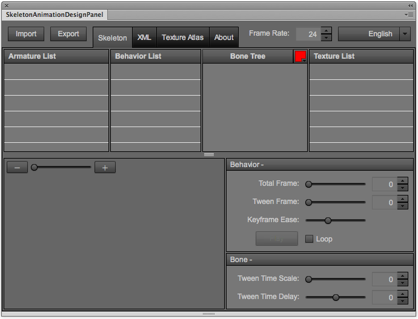
-
在此面板中点击“Import”按钮，此时将出现下图所示窗口：

在导入面板中你可以设置贴图排序、贴图高度及贴图间距。在导入选项中，你可以导入选中的库元件、所有库元件以及通过骨骼面板导出的PNG/SWF/ZIP文件等。
选中Flash Pro库中的MovieClip元件Dragon，然后在骨骼动画编辑面板中选择导入选中的项目，点击OK按钮。
-
骨骼动画编辑面板导入动画元件Dragon后如下图：
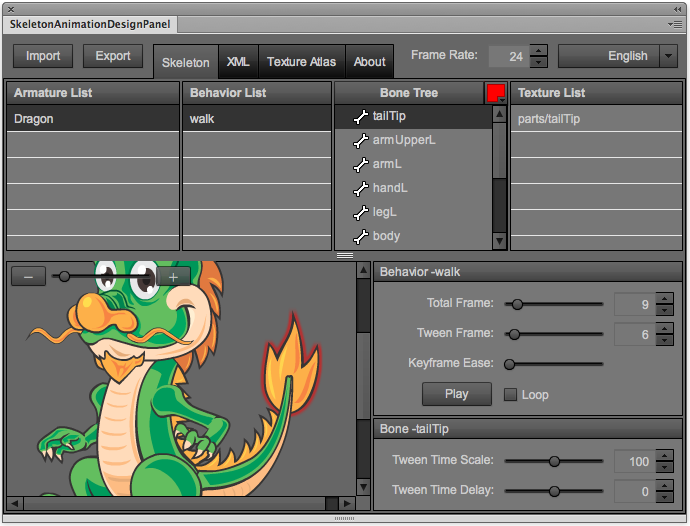
Armature List: 导入动画MovieClip的列表，与MovieClip在库中的名称一致，程序中将以此名称来创建动画对象。每个包含动作的MovieClip，在DragonBones里我们称之为“骨架”（Armature）。
Behavior List: 对应动画对象的各个动作/行为名称，与MovieClip中帧标签名称一致，程序中将以此名称来动态播放各种动作。
Bone Tree: 动画对象的各个骨骼组成部分，与MovieClip中各层名称一致。
Texture List: 动画对象中各部分对应的材质名称。
-
对于每个动作，首先要设置的参数如下：
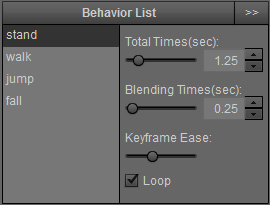
Total Frame: 当前动作的总帧数。帧数越大，动作越慢。
Tween Frame: 设置其他动作切换到此动作需要的帧数。比如，你的游戏角色有个动作为蹲下，此动作在时间轴上仅有1帧。假如设置此参数为6，那么当游戏中从其他动作切换到蹲下时候，程序会自动增加6帧的过渡，让各个动作切换更加自然。
Keyframe Ease: 当前动作各关键帧之间的缓动系数。
Loop: 当前动作是否循环播放。比如角色的走、跑步等。
-
A当设置好上述参数，你可以在左下方的预览区域中看到当前编辑动作的动画。
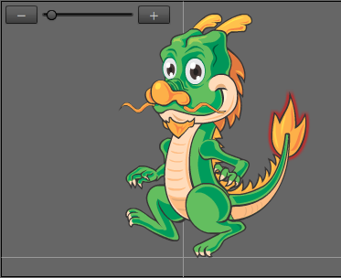
预览窗口左上角可以缩放预览对象，便于观察的动作。
-
OK，接下来我们在Bone Tree面板中设置动作中各个骨骼的从属关系。下图可以看到在默认导入的动画中，各个骨骼没有关联：
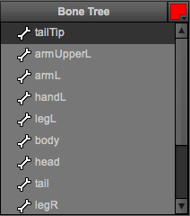
在此面板中右上角的 可以设置在预览窗口里当前选中骨骼的高亮颜色。
在列表里我们可以拖拽的方式，将子骨骼附着在父骨骼上。如下图，我们将身体设置为主骨骼，而头、尾巴、上肢和下肢都为其子骨骼。而上肢中又包含了上臂、下臂和手等。通过树形结构我们可以非常直观的看到他们的从属关系。
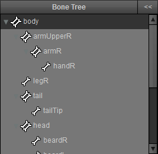
-
我们可以对每个骨骼的运动参数进行单独设置。在Bone Tree面板中选中你需要设置的骨骼，调节下列参数。
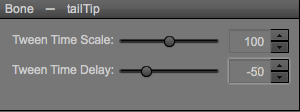
Tween Time Scale: 设置当前骨骼运动时间相对动作总时间（总帧数）的增加或减少。
Tween Time Delay: 设置当前骨骼开始运动时间相对所属动作的延迟或提前。
别小看这2个参数，各个骨骼通过这2个参数微调后，你会发现角色动作哪怕在时间轴上仅有2个关键帧，也会产生非常复杂的动作。
例如本例中，我们把龙的尾巴tail的Tween Delay设置为-10，尾巴尖tailTip的Tween Delay设置为-50，你可以明显看到尾巴随着身体的运动甩动起来，非常的生动。;)
-
当你调整完骨骼动画，就可以点击”Export”按钮导出。
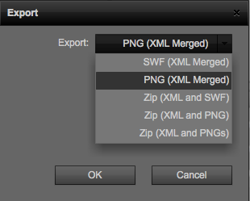
在导出格式选项中，包含多种数据格式供你实际项目需求。
SWF (XML Merged): 包含骨骼XML数据的SWF格式，如果游戏需要矢量的骨骼动画可以采用此格式导出，当然前提是原始素材都是矢量的。
PNG(XML Merged): 包含骨骼XML数据的PNG格式。
Zip(XML and SWF): 分开保存的骨骼XML数据和SWF资源。
Zip(XML and PNG): 分开保存的骨骼XML数据和PNG图片。
Zip(XML and PNGs): 分开保存的骨骼XML数据和按每个骨骼独立的PNG图片包。
例如在本例中，我们选择PNG(XML Merged)，点击OK导出文件DragonWalk.png到指定的目录。
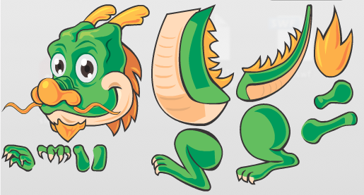
你会发现导出的就一个PNG文件？是的，我们选择了合并XML数据的PNG格式，所以此文件中包含了骨骼动画需要的所有数据。
作为设计师，到此你的工作圆满完成。
教程2：针对程序开发 在ActionSript项目中应用骨骼动画

在设计师用骨骼动画编辑面板导出好相关格式数据之后，程序开发者就可以运用DragonBones的开源动画框架将数据资源导入到程序并让动画角色运动起来。只需几步操作，非常简单！
接下来，你将了解如何在传统DisplayList或支持GPU加速的Starling框架中调用骨骼动画。
下载Skeleton Animation Framework，将这个包导入至你的开发项目中。
在开始代码前，让我们了解下骨骼动画框架的基本概念。
Factory: 这是构建骨骼动画的基础。它负责从前面骨骼面板导出的资源中解析数据格式和准备图像资源，并且通过它创建骨骼容器Armature。
Armature: 我们可以把它想像为一个容器，它对应在Flash Pro中编辑并通过骨骼面板导出的一个MoiveClip。通过Armature来对各骨骼进行管理，播放动画等。
现在我们来看看在在传统DisplayList显示模式中添加骨骼的示例。打开此教程对应的源文件DB_Tutorial_Walk_DisplayList.as。
-
首先，将骨骼面板导出的资源嵌入到项目。
[Embed(source = "../assets/Dragon1.swf", mimeType = "application/octet-stream")] private static const ResourcesData:Class;此处嵌入的资源是由Flash Pro骨骼动画编辑面板导出的合并了XML数据文件的PNG文件或SWF文件。当然，你也可以通过动态加载的方式在项目运行时候实时载入资源。
-
创建factory，并通过fromRawData方法解析载入的资源格式，当解析完毕后交给对应事件textureCompleteHandler处理。
factory = new BaseFactory(); factory.fromRawData(new ResourcesData(), textureCompleteHandler); -
事件函数textureCompleteHandler中，首先用buildArmature方法构建骨骼动画容器：
armature = factory.buildArmature("Dragon");然后将容器的显示内容armature.display添加到场景：
addChild(armature.display as Sprite);指定要播放骨骼的某个动作：
armature.animation.play("walk"); -
最后，为ENTER_FRAME事件函数中添加armature.update()方法，让SWF每帧渲染时候更新骨骼动画。
OK,仅此几行代码，你就可以将骨骼动画添加到已有项目。很简单，不是么？:)
下面我们聊聊在Starling中添加骨骼动画的方法。Starling是一个非常不错的开源游戏框架，它可以帮助你快速创建基于Stage 3D技术GPU加速的2D游戏。如果你对它还不了解，请访问Starling的官方网站：http://starlingframework.org。
使用Starling的用户或许对用Sprite Sheet的位图序列来构建动画非常熟悉，这种方式最大问题是对于复杂动画会占用过多内存。以下图为例，一个简单的行走动作，就会占用一大张位图材质。

而DragonBones解决了这个问题，不但仅需要少量骨骼素材，而且可以让动画更加丰富生动。
DragonBones可以完美的结合Starling，创建基于GPU加速的2D骨骼动画。

打开本示例的项目DBStarlingWalk.as源码你会发现，我们创建了一个基于Starling的factory：
factory = new StarlingFactory();
而余下的代码，跟上个DisplayList的示例代码完全一致。
关于Starling中嵌入的骨骼动画素材资源，可以是合并骨骼XML数据的PNG格式，也可以是合并XML数据的SWF格式。对于SWF格式的矢量资源，Skeleton Animation Framework会自动在程序运行时转换矢量为位图材质，节省你项目尺寸。
教程3：创建并控制多个动作的骨骼动画

接下来你将了解到运用DragonBones创建包含多个动作的骨骼动画，并在程序中通过键盘交互控制动作。
-
打开文件DragonBones_Tutorial_MultiBehavior.fla，双击库里的动画元件Dragon，你可以看到此动画中有四个动作：stand，walk，jump和fail。每个动作的起始帧上添加了对应的帧标签，这也是DragonBones识别不同动作的标识。

-
打开骨骼动画编辑面板，你会看到在Behavior List里面会有多个动作，选择某个动作就可以为对应动作设置动画帧数、缓动，设置此动作的某个骨骼的细节参数等。
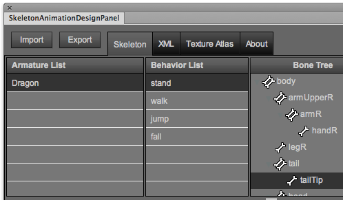
-
请留意Behavior编辑里的Tween Frame选项。
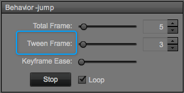
这个选项是表明的其他动作切换到当前动作需要的过渡帧数。例如这里设置的跳跃动作的Tween Frame为3，那么其他动作切换到跳跃需要3帧，DragonBones框架会自动为你添加其中的过渡帧，让各种动作之间切换变得自然。当然，你可以在动画预览窗口中看到各种动画的切换效果。
调整完毕各个动作的细节后，点击“Export”按钮导出骨骼动画数据。
-
打开DBStarlingMultiBehavior.as文件，代码如下。此示例是在Starling框架中通过键盘控制骨骼动画运动。
package { import dragonBones.Armature; import dragonBones.factorys.StarlingFactory; import flash.ui.Keyboard; import starling.display.Sprite; import starling.events.EnterFrameEvent; import starling.events.KeyboardEvent; import starling.text.TextField; public class DBStarlingMultiBehavior extends Sprite { [Embed(source = "../assets/Dragon2.png", mimeType = "application/octet-stream")] public static const ResourcesData:Class; private var factory:StarlingFactory; private var armature:Armature; private var armatureClip:Sprite; private var isLeft:Boolean; private var isRight:Boolean; private var isJumping:Boolean; private var moveDir:int=0; private var speedX:Number = 0; private var speedY:Number = 0; private var textField:TextField public function DBStarlingMultiBehavior() { factory = new StarlingFactory(); factory.fromRawData(new ResourcesData(), textureCompleteHandler); } private function textureCompleteHandler():void { armature = factory.buildArmature("Dragon"); armatureClip = armature.display as Sprite; armatureClip.x = 400; armatureClip.y = 550; addChild(armatureClip); updateBehavior() addEventListener(EnterFrameEvent.ENTER_FRAME, onEnterFrameHandler); stage.addEventListener(KeyboardEvent.KEY_DOWN, onKeyEventHandler); stage.addEventListener(KeyboardEvent.KEY_UP, onKeyEventHandler); textField=new TextField(400,30,"A-move left,D-move right,W-jump","Verdana",16,0,true) textField.x=60; textField.y=2; addChild(textField); } private function onKeyEventHandler(e:KeyboardEvent):void { switch (e.keyCode) { case Keyboard.A : case Keyboard.LEFT : isLeft=e.type == KeyboardEvent.KEY_DOWN; break; case Keyboard.D : case Keyboard.RIGHT : isRight=e.type == KeyboardEvent.KEY_DOWN; break; case Keyboard.W : case Keyboard.UP : jump(); break; } var dir:int; if (isLeft && isRight) { dir=moveDir; return; } else if (isLeft) { dir=-1; } else if (isRight) { dir=1; } else { dir=0; } if(dir==moveDir) { return; } else { moveDir=dir; } updateBehavior() } private function onEnterFrameHandler(_e:EnterFrameEvent):void { updateMove(); armature.update(); } private function updateBehavior():void { if (isJumping) { return; } if (moveDir == 0) { speedX = 0; armature.animation.gotoAndPlay("stand"); } else { speedX=6*moveDir; armatureClip.scaleX = -moveDir; armature.animation.gotoAndPlay("walk"); } } private function updateMove():void { if (speedX != 0) { armatureClip.x += speedX; if (armatureClip.x < 0) { armatureClip.x = 0; } else if (armatureClip.x > 800) { armatureClip.x = 800; } } if (isJumping) { if (speedY <= 0 && speedY + 1 > 0 ) { armature.animation.gotoAndPlay("fall"); } speedY += 1; } if (speedY != 0) { armatureClip.y += speedY; if (armatureClip.y > 540) { armatureClip.y = 550; isJumping = false; speedY = 0; updateBehavior(); } } } private function jump():void { if (isJumping) { return; } speedY = -25; isJumping = true; armature.animation.gotoAndPlay("jump"); } } }
通过上面的代码我们可以发现，我们只需要在程序中需要播放相关骨骼动画的时候调用函数armature.animation.gotoAndPlay()即可。

除了指定需要播放的动作名称，你还可以通过此函数来动态指定动作的总帧数、是否循环等。
对于每个动画，除了指定其播放之外，DragonBones框架提供了动画播放相关的各种事件。
动作切换事件:
armature.addEventListener(dragonbones.events.Event.MOVEMENT_CHANGE, aramtureEventHandler);
动作开始事件:
armature.addEventListener(dragonbones.events.Event.START, aramtureEventHandler);
动作结束事件
armature.addEventListener(dragonbones.events.Event.COMPLETE, aramtureEventHandler);
动作循环完毕事件:
armature.addEventListener(dragonbones.events.Event.LOOP_COMPLETE, aramtureEventHandler);
通过各种事件与动作的配合，你可以轻松创建具有复杂运动角色的游戏。
控制骨骼框架中的每根骨头

对于一个有趣的游戏，仅仅播放预先设置的骨骼动画或许不够，我们需要角色具有动态可控的各自动作。令人高兴的是DragonBones提供了访问并控制骨骼框架里每根骨头的方法，让你的角色在游戏中随意运动。
此示例通过鼠标在场景中的移动来控制骨骼。我们创建了一个跟随鼠标运动的小鸟，小龙人会与小鸟保持一定距离，同时小龙人的头和胳膊会跟随小鸟运动而做出不同姿势，非常有趣。
打开DBStarlingControlBone.as，代码如下。
package
{
import dragonBones.Armature;
import dragonBones.Bone;
import dragonBones.factorys.StarlingFactory;
import flash.geom.Point;
import flash.ui.Mouse;
import starling.display.Image;
import starling.display.Sprite;
import starling.events.EnterFrameEvent;
import starling.events.TouchEvent;
import starling.textures.Texture;
public class DBStarlingControlBone extends Sprite
{
[Embed(source = "../assets/Dragon2.png", mimeType = "application/octet-stream")]
public static const ResourcesData:Class;
[Embed(source = "../assets/starling.png")]
private static const starlingImg:Class;
private var factory:StarlingFactory;
private var armature:Armature;
private var armatureClip:Sprite;
private var mouseX:Number = 0;
private var mouseY:Number = 0;
private var moveDir:int=0;
private var dist:Number;
private var speedX:Number = 0;
private var starlingBird:Image;
private var _r:Number;
private var _head:Bone;
private var _armR:Bone;
private var _armL:Bone;
public function DBStarlingControlBone()
{
factory = new StarlingFactory();
factory.fromRawData(new ResourcesData(), textureCompleteHandler);
}
private function textureCompleteHandler():void
{
armature = factory.buildArmature("Dragon");
armatureClip = armature.display as Sprite;
armatureClip.x = 400;
armatureClip.y = 550;
addChild(armatureClip);
updateBehavior(0)
addEventListener(EnterFrameEvent.ENTER_FRAME, onEnterFrameHandler);
stage.addEventListener(TouchEvent.TOUCH, onMouseMoveHandler);
starlingBird=new Image(Texture.fromBitmap(new starlingImg()))
addChild(starlingBird);
Mouse.hide();
//get the bones which you want to control
_head = armature.getBone("head");
_armR = armature.getBone("armUpperR");
_armL = armature.getBone("armUpperL");
}
private function onEnterFrameHandler(_e:EnterFrameEvent):void
{
checkDist();
updateMove();
updateBones();
armature.update();
}
private function checkDist():void
{
dist = armatureClip.x-mouseX;
if(dist<150)
{
updateBehavior(1)
}
else if(dist>190)
{
updateBehavior(-1)
}
else
{
updateBehavior(0)
}
}
private function onMouseMoveHandler(_e:TouchEvent):void
{
var _p:Point = _e.getTouch(stage).getLocation(stage);
mouseX = _p.x;
mouseY = _p.y;
starlingBird.x=mouseX-73;
starlingBird.y=mouseY-73;
}
private function updateBehavior(dir:int):void
{
if(moveDir==dir)return;
moveDir=dir;
if (moveDir == 0)
{
speedX = 0;
armature.animation.gotoAndPlay("stand");
}
else
{
speedX=6*moveDir;
armature.animation.gotoAndPlay("walk");
}
}
private function updateMove():void
{
if (speedX != 0)
{
armatureClip.x += speedX;
if (armatureClip.x < 0)
{
armatureClip.x = 0;
}
else if (armatureClip.x > 800)
{
armatureClip.x = 800;
}
}
}
private function updateBones():void
{
//update the bones' pos or rotation
_r = Math.PI + Math.atan2(mouseY - armatureClip.y+armatureClip.height/2,
mouseX - armatureClip.x);
if (_r > Math.PI)
{
_r -= Math.PI * 2;
}
_head.node.rotation = _r*0.3
_armR.node.rotation = _r *0.8;
_armL.node.rotation = _r * 1.5;
starlingBird.rotation = _r*0.2;
}
}
}
从上面代码我们可以看到，通过方法dragonBones.Armature.getBone(_name:String):Bone来获取某个骨骼。骨骼中的node对象包含了此骨骼的位置坐标，旋转弧度，拉伸比例，倾斜数据等等。我们根据游戏逻辑的需要对骨骼的这些参数赋数，即可实现动态控制此骨骼的效果。
在上面示例中，请留意updateBones()函数里，我们先获取到当前鼠标位置与骨骼框架中心点的夹角，然后根据这个角度，来改变小龙人的头部和胳膊的旋转弧度，从而实现了这个有趣的效果。
实现骨骼动画换装
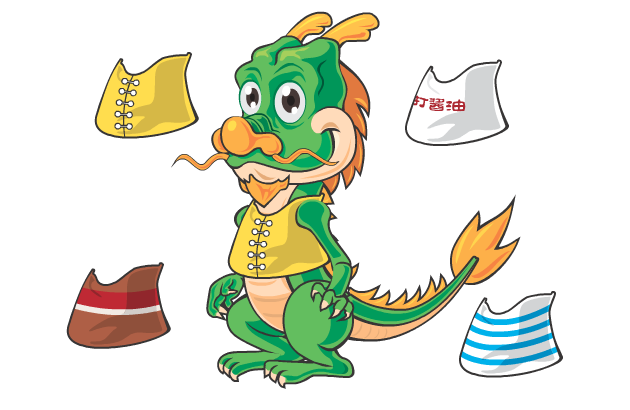
在游戏中我们往往有这样的需求：角色更换服饰、装备或武器等。对于DragonBones来说，所谓的换装可以通过更换对应骨骼的材质来轻松实现。
因为是更换骨骼的材质，所以我们可以在程序中动态创建新材质并赋予对应骨骼，新的材质可以是来自其他方式创建或加载的图片，也可以来自DragonBones骨骼动画编辑面板导出的材质图集（Texture Atlas）。或许你会问，如何在Flash Pro中把没有预先放在动画时间轴的材质一起打包在骨骼动画编辑面板导出的材质图集中呢？
-
打开本教程的示例文件DragonBones_Tutorial_ChangeClothes.fla 。这个文件中，我们把动画元件Dragon穿上了一件黄马褂，将其放在时间轴上名为clothes的层上，并调整符合各种动作。

-
然后请注意库中的clothTextureTemp动画元件，双击打开它，你会发现我们把打算换装的4件衣服放在时间轴不同层上，并分别将层名称与其对应。这4件衣服因为大小形状一样，所以在层中重合了。不过实际项目中，很多时候更换的衣服、武器或道具大小不尽相同，所以需要相对于骨骼动画中原始服饰的位置调整好各自坐标位置。
留意在层label上我们给第一帧的帧标签取名为temp。因为没有帧标签的动画元件，是不会被骨骼动画编辑面板识别导入的。

-
选中库中的Dragon和clothTextureTemp两个元件，打开骨骼动画编辑面板，点击“Import”按钮导入所选的元件，你会发现在面板中Armature List里有了一个名为clothTextureTemp的骨架并且包含clothes1至clothes4的骨骼。不用管它，我们将它们导入面板的目的不是为了编辑骨骼动画，仅仅是为了最终导出这些服装材质与骨骼动画材质到一个文件中。
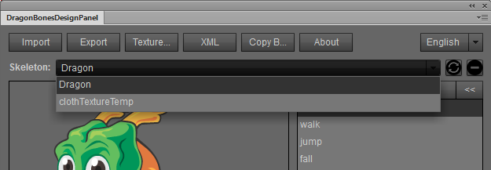
-
接下来你只需对Dragon这个骨架进行相关的骨骼动画调整，然后点击”Export”按钮导出素材资源。这里我们导出为合并XML数据的DragonWithClothes.png 。你会发现导出的材质图集中包含了我们需要的各自衣服。:)
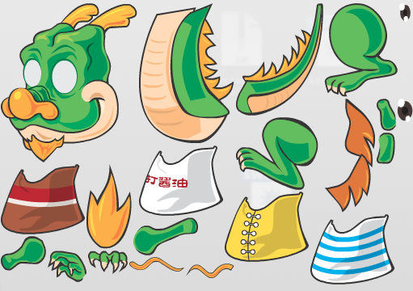
-
现在我们看看在程序中如何实现换装。打开教程3中创建的DBStarlingMultiBehavior.as文件，我们直接在这个文件中添加换装代码即可。首先将嵌入的素材更改为DragonWithClothes.png：
[Embed(source = "../assets/DragonWithClothes.png", mimeType = "application/octet-stream")] -
然后添加2个变量，数组textures保存了我们要更换服装材质的名称，整数textureIndex用来做切换材质时候的索引。
private var textures:Array = ["parts/clothes1", "parts/clothes2", "parts/clothes3", "parts/clothes4"]; private var textureIndex:int = 0;请注意这里写的是“parts/clothes1”而不是“clothes1”，原因是Flash Pro的库中不同目录的元件名称可以相同，所以DragonBones在保存资源路径的时候也包含了目录结构。打开DragonBones_Tutorial_ChangeClothes.fla看看库里的衣服动画元件所在的目录你就明白了。:)

-
在键盘响应函数onKeyEventHandler中添加下面代码，这样按下键盘C键的时候调用换装函数。
case Keyboard.C: if (e.type == KeyboardEvent.KEY_UP) { changeClothes(); } break; -
创建换装函数changeClothes()如下：
private function changeClothes():void { //循环更换贴图 textureIndex++; if (textureIndex >= textures.length) { textureIndex = textureIndex - textures.length; } //从骨骼面板导出的textureData中获取Image实例，也可以单独从其他图片文件中构造Image var _textureName:String = textures[textureIndex]; var _image:Image = StarlingFactory.getTextureDisplay(factory.textureData, _textureName); //用image替换bone.display完成换装（注意bone.display的回收） var _bone:Bone = armature.getBone("clothes"); _bone.display.dispose(); _bone.display = _image; }这里我们用到了dragonBones.factorys.StarlingFactory.getTextureDisplay(_textureData:TextureData, _fullName:String):Image来获取由骨骼动画编辑面板导出的材质数据，然后将对应的材质赋予给骨骼的display对象，实现了换装。当然，正如前面所说，换装的材质可以随意来自程序中载入的其他图片资源。
W另外，当你熟悉了DragonBones的开源框架，你会发现可以通过代码实现更加灵活的变换，除了更换骨骼材质，你还可以在骨骼框架（Armature）中动态的删除、添加骨骼，改变骨骼的从属关系等。
OK，到此你掌握了如何在DragonBones中为你的游戏角色换装，赶紧在你的游戏中试试吧。:)